Is it possible to achieve food and energy independence on one acre? Well, with imagination, hard work, and the right one acre, we think it can be done . . . and that's what this project is all about. Of course, providing most of the basic needs for four people from such a small piece of ground is a tall order. Still, we think it's a goal worth pursuing, and we're hoping that in this series of articles about our lowcost homestead we'll be able to help some of you in your struggles to increase your self-reliance . . . by doing some of the experimenting for you.
In previous installments, we discussed our initial plans for the project,the construction of the building's shell, and its waterproofing and insulation . . . as well as some special energy-related "extras". This time, we'll concentrate on the interior, specifically the fine cabinetry which complements our home's kitchen.
Until you've actually built, or been involved in "costing out", a residence, it's hard to comprehend how much cash it actually takes to finish the heart of a home. Yet in dealing with a dwelling as personal as our Lost-Cost Earth Shelter (and who'd deny that any owner-built home absorbs some of the character of its creator?), we felt it would be almost sinful to skimp on the soul-pleasing amenities, even when faced with a very stringent budget.
We also believe (and we're confident that this opinion would be shared by many owners-to be) that the kitchen area serves as a significant focal point for our home's entire communal zone . . . not just in that it's traditionally a place where the family gathers informally, but because-considering the openness of our dwelling's design-its use as such is more a matter of fact than choice.
Given these circumstances, it wasn't too difficult to justify the expenditure of time, in lieu of monetary resources, required to handcraft the kitchen cabinets you see in these photographs. Believe it or not, much of the foundation material that went into the cupboards could be termed junk, with the remainder being dressed from rough lumber or, in the case of the surface laminate, purchased outright.
On the other hand, please note that we're not about to suggest that a novice woodworker with a minimally equipped shop could easily duplicate the caliber of craftsmanship revealed in these furnishings. So, in an effort to accommodate the beginner on a budget, we've come up with an alternative cabinet plan. Though not quite as pleasing to the eye as the former design, it is a whole lot easier and less time-consuming to build yet results in a serviceable and attractive fixture.
ONE SLICK. . .
To make the most of our 240-odd square feet of kitchen space, we decided to install an 8'-long counter along the southwest wall, adjacent to the line of windows. Rather than just build a straight row of cabinets-which would have encroached on the usable floor area, leaving an all but useless gap behind the counter-we chose to facet each cabinet module so that, as a group of three, they would match the contour of the wall behind them.
SILL TRAY AND COUNTER DETAIL
Then, to maximize our use of the kitchen's glazing, we made up some galvanized metal trays to serve as convenient interior window boxes for homegrown culinary herbs and placed them at the rear of the counter's surface, at the sills.
Concurrently, to define the boundaries of the food preparation area, we worked up a "floating" cabinet, or island, which we placed on the kitchen's east side. This 8' unit which assumes the shape of a modified parallelogram to enhance traffic flow-combines drawer and cabinet storage on one side with sit-down counter space opposite and a work area in between.
Since both sets of cabinets share essentially the same construction techniques (and were both designed on a modular theme), we've detailed a typical section in our illustration and will "walk through" the assembly sequence as well, highlighting the tricky spots as we go.
We mentioned previously that it's going to take a fair amount of shop equipment to successfully duplicate the cabinets shown here. Eco-Village staffer Dean Davis, who crafted the fixtures, had the benefit of a table saw (with a dado blade), a jointer/planer, a router, and a portable belt sander. . . as well as an assortment of hand tools that included a drill, a band saw, a block plane, file and wood chisel sets, a mallet, screwdrivers, a drawknife, a nail set, clamps, a scribe, a level, a doweling jig, and measuring equipment.
To start, Dean selected the best pieces of 3/4" plywood scrap he could scrounge from the remnants left over from various other construction projects. Using this "one side clean" material as a carcass, he completed the framework in poplar cut from the Eco-Village site, mating the standards with blind mortise and tenon joints. (Though most joiners would consider this species of wood inferior for finish work, we were determined to use indigenous lumber wherever possible and are not at all displeased with the appearance of the final dressed grain.) The exposed plywood was covered, as well, with 3/8" poplar panels, butted vertically and quarter-rounded at the edges.
The drawers themselves were made from white oak harvested on the site. Oak runners set into the framing uprights provided support, and dadoes cut into the length of the drawer sides were sized and positioned to match. It's important that this marriage be given allowance for seasonal swelling, and that wax be used on the mating surfaces, as well. Finger joints, made on the table saw with a simple homebuilt jig (see the accompanying sidebar), were used at all the corners, and the 1/4" drawer bottoms were held in place with narrow framing strips.
To make the doors-which are of a simple overlay design-Dean first cut the frames of 3/4" poplar, quarter-rounded their outer edges, then ran dadoes along their inner edges to accept floating tongue and groove panels ... one of which in every group required double tongues. Though this insert construction is perhaps more traditional, an alternative would be to use spline joints at every junction. Either way, the frame's stiles and rails are locked together at the corners with open mortise and tenon joints, which offer a pleasant appearance because of their exposed end grain.
Prior to placing the shelves and hanging the doors, our cabinetmaker had to set each unit's toeboards, which serve as pedestals. Rather than use 2 X 4's (which are actually 3-1/2" wide), he trimmed some pressure-treated 2 X 6's down to 4" in width, then arranged them to match the cupboards' framing. In the case of the wall unit, Dean first leveled his boards along that surface and then used this row as a standard by which to set the remaining feet. The island, on the other hand, required a bit more attention because of the irregularities common in slab foundations: Each of its toeboards had to be scribed to duplicate the contour of the floor, then the high spots had to be taken down with a drawknife and a block plane. When leveled in this manner, the base was fastened to the cabinet's frame with finishing nails.
Once the cabinets were mounted, the finish work could be done easily. The doors were hung first to dictate the width of the drawer faces. With that dimension known, those poplar panels were trimmed to size and screwed from the inside to the drawer fronts. You'll notice that the drawer and cabinet pulls are made from quarter sections of (MOTHER's own homegrown) bamboo. Since these handles are glued into dadoes, it was much easier to precut those slots early on and to secure the pulls later.
The last components to be installed were the countertops. The subsurface is 3/4" particleboard, chosen primarily because that material is more stable than plywood. This platform, in both cabinets, was cut with a 3/4" overhang along the edges exposed to traffic . . . but the sit-down counter area was given a total of 11-1/2" of overhang to provide some legroom. To offer something for the perimeter trim to rest against, Dean fastened some additional composite board to the underside of the overhangs. Before cutting that decorative wooden edging, he sized and cemented the surface laminate in place, then carefully laid masking tape along the top of its perimeter. Laminated plastic veneers tend to chip at exposed edges, so-to assure that the surface material was protected-he deliberately oversized the poplar trim slightly so it'd be raised above the level of the countertop when installed. Some close handwork with the files brought this discrepancy to a minimum, while the tape protected the plastic surface during the operation.
Rather than attempting to bend the trim around some of the sharp curves existing on the island counter, Dean merely cut and fastened his straight sections after covering the rounded corners with wood cut to the exact shape with a band saw. The wall counter, which features only a slight contour, required no custom-cutting, since the edge board could be pulled in with some pipe clamps . . . though steam-bending could be used for more extreme contours.
The cabinets were finished in tung oil, which enhances rather than covers the grain. Though this method is commonly used with oak furniture, it lent a pleasant effect even to the poplar, which, as it turned out, had a heart of gold!
.. . AND ONE QUICK
Right off the bat, we're going to surprise you by confessing that our easily constructed "proletariat pantry" is probably going to cost more to build than the fancy version we've just described. The reason is, of course, that the inexperienced carpenters among us will be forced to buy (rather than make) many of the cabinet's components.
This simply designed floor cupboard was built to complement the kitchen of "My MOTHER's House" and consists exclusively of yellow pine and plywood. Instead of utilizing attractive but patience-trying mortise and tenon joints, it gets by fine with butt and rabbet joints, screws, and finishing nails.
Equally important (to the cupboard-lacking novice woodcrafter, at least), this version doesn't demand a whole lot of fancy power tools . . . and, in fact, could be built entirely with a crosscut saw, a hand drill, a level, a sharp wood chisel set, a mallet, a steel hammer, a nail set, a measuring tape, a square, screwdrivers, a coping saw, and a-block sander (though a table saw or at least a circular saw-would be very welcome).
The first task involved cutting the 1 X 4 standards that make up the front and rear face framing. The uprights should be mated to the horizontal facers with dado joints, but in a pinch, small plywood bridges, glue, and finishing nails can be used to hold those parts together. Once those two structural components were completed, they were tied together at the ends and in the center with 2 X 2 web framing and 2 X 6 spacer standards, the length of which dictated the depth of the finished cabinet. At the same time, the plywood cupboard shelves were fastened in place on 3/4" X-1" support rails and faced with 1/2" trim molding.
The drawers were, like the framing pieces, fabricated from one-by stock and joined with a basic butt joint. Small countersunk wood screws threaded into the end grain keep those compartments together. We didn't bother to build runners for them but purchased metal glides, instead. These were fastened, one unit to each side, between the drawers and the spacer standards running the depth of the cabinet. (Each unit consists of two parts, the socket rail being fastened to the spacer and the roller bar to the drawer side.)
At this point, the 1/2" plywood doors were cut. These slabs overlaid the openings and were hung with half-hidden hinges, and all the pulls were hardware store fare.
The toeboards in this version are of the standard 3-1/2" height and so were made out of 2 X 4's. Once the cabinet was nailed to its pedestal, the 1 X 6 tongue and groove end sheathing could be fastened with finishing nails to the side framing and butted to the upright facers.
Our simple counter's work surface consists merely of 1 X 4 tongue and groove pine boards butted tightly together and joined with cross braces at the underside. Instead of using a true overhang, we chose to add a 3/4" X 1 1/2" trim molding all around the top's exposed edge, building up beneath it with scraps as needed. The edging's corner joints were mitered, nailed, and the heads sunk. These nail holes, like all the other necessary blemishes in the cabinet, were filled and sanded after the wood was finished, and the flaws blended with touch-up crayon.
To protect the pine, we used several coats of varnish on the counter surface. The rest of the cabinet could easily be stained, varnished, or selectively painted. No matter how the cupboard's dressed, it should turn out to be a functional and pleasing piece of furniture, especially for someone's "first try".
As this issue goes to press, MOTHER's Eco-Village staffers are diligently preparing for the busy summer season ahead. But some are carving out time to put the finishing touches on our low-cost home's interior, as well as getting neck-deep in our chicken coop/ greenhouse project, which is part of the model homestead's "master plan" for independence. Nope, we won't promise you that we'll have a full report by next issue, but we will keep you up to date as things develop.
|
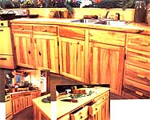 ABOVE: The handcrafted popular cabinets complement our decor. FAR LEFT: The faceted wall units and, to their rigth, a home-built 12-volt refrigerator we'll discuss in a future issue. LEFT: The ""work"" side of the kitchen island. |
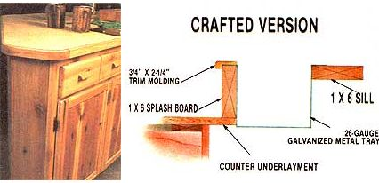 Trim molding was cut to match the contour. |
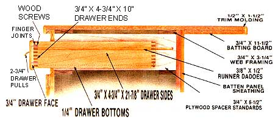 Drawer and door details. |
|
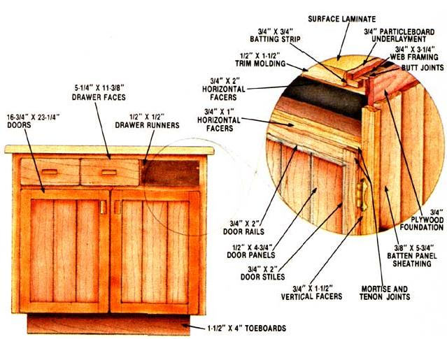 A Simple approach to cabinetry. |
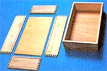 LEFT TO RIGHT: Doors and shelves are 1/2"" plywood . . . prefab glides ease construction . . . a basic drawer design. |
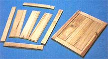 |
|
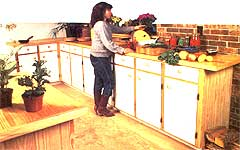 |
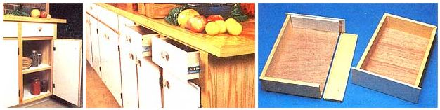 |
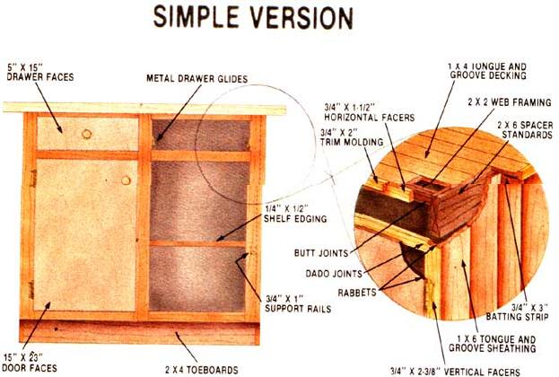 |
|
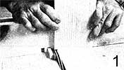 |
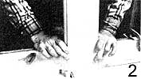 |
|
|
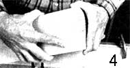 |
|
|